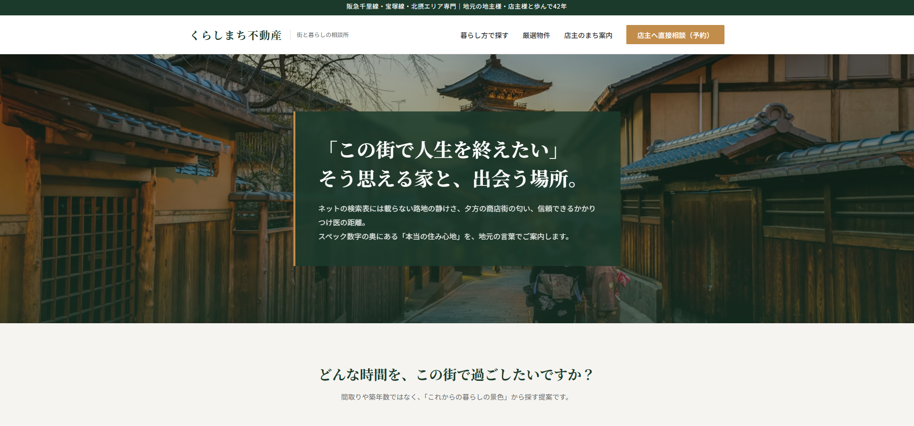
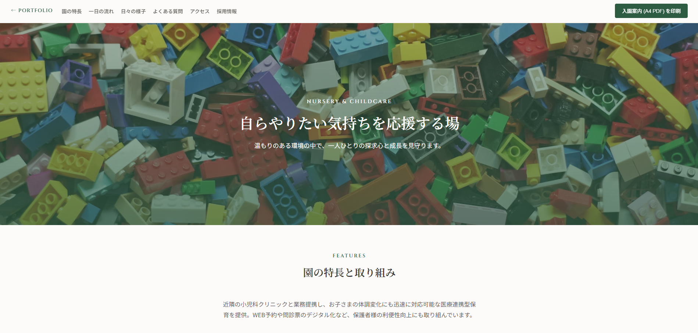
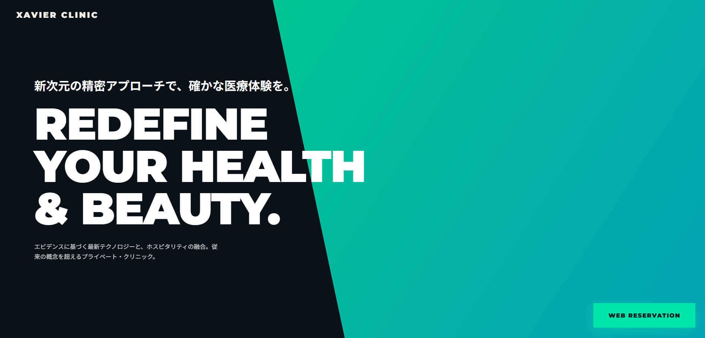
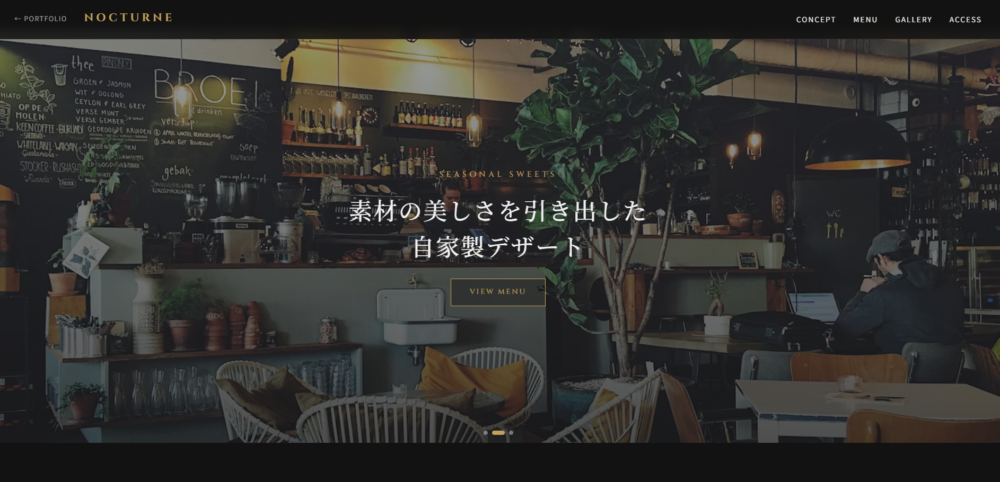
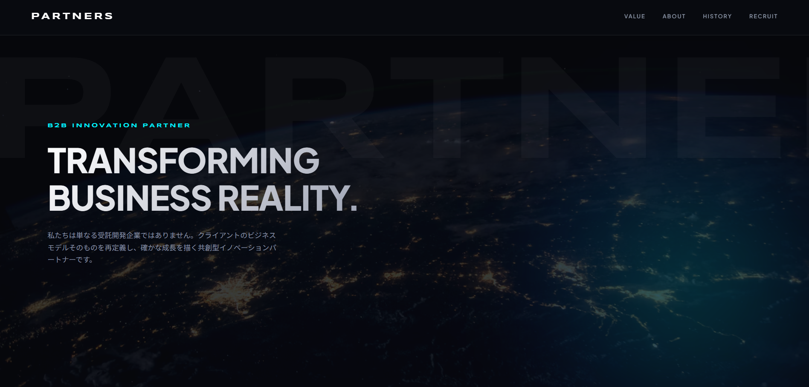
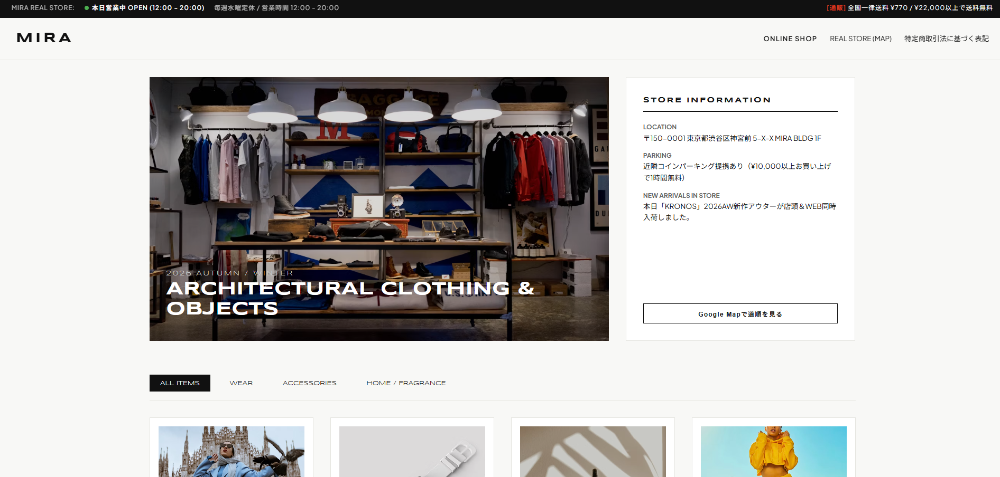
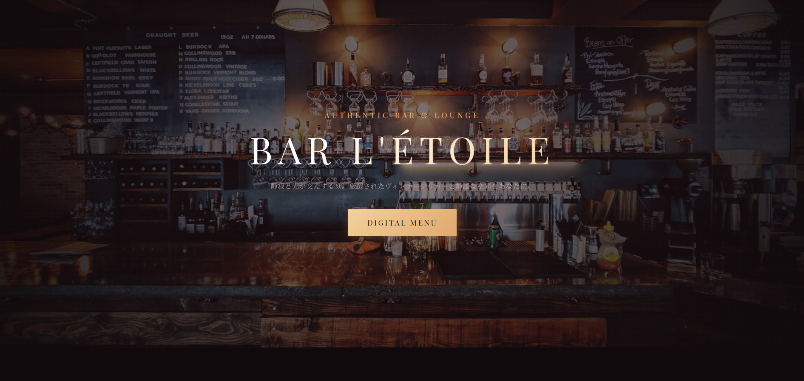
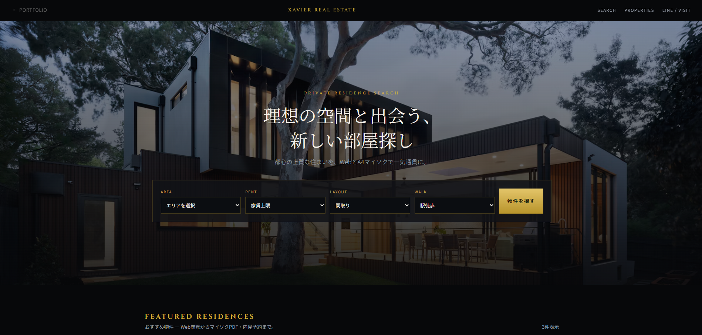
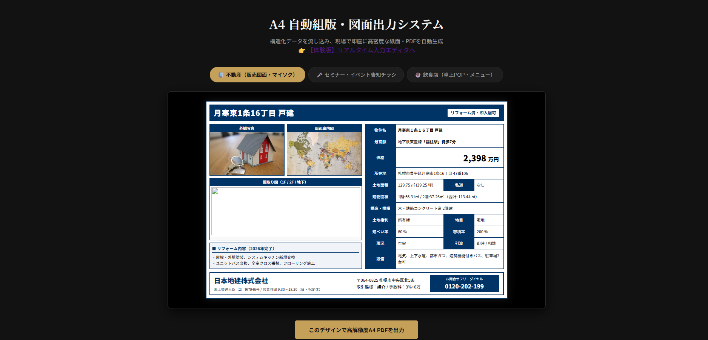

AI × Web × Impact
最適解のホームページを。
AIの力だけでは、最適なホームページはつくれない。
大切なのは、何を伝え、誰に届け、どう動いてもらうのか。広告・Web制作で培った経験と視点をもとに、AIを的確にディレクションし、企画から設計、デザイン、実装までを一貫して組み立てます。
既成の型に当てはめるのではなく、事業や目的に合わせた答えを導き出す。
AIを使うだけで終わらせない。経験と判断力で、最適解をカタチにする。
INTO
FORM.
MAKE SENSE.SC—01
→ SHAPE
→ SHARE
つくれるものを、先に見せる。

くらしまち不動産REAL ESTATE / DEMO ↗
SUNSHINE KIDS ACADEMYCHILDCARE / DEMO ↗
XAVIER MEDICAL CLINICMEDICAL / DEMO ↗
NOCTURNE CAFE & BARCAFE / DEMO ↗
PARTNERS Inc.CORPORATE / DEMO ↗
MIRA SELECTONLINE STORE / DEMO ↗
BAR L'ÉTOILEBAR / DEMO ↗
XAVIER REAL ESTATEREAL ESTATE / DEMO ↗
A4 LAYOUT TOOLBROWSER TOOL / DEMO ↗つくることより、
伝わること。
Webサイトは、見た目を整えるだけでは役割を果たせません。誰に何を伝え、どんな理解や行動につなげたいのか。事業の状況やお客様の視点から、伝えるべき価値と情報の順番を整理します。
studioCALXは、対話とリサーチを起点に、企画・コピー・情報設計・デザイン・実装をつなぎます。AIは発想や検証を広げる手段として活用し、最後は人の目で確認して、実際に使える形に仕上げます。
整理する
話を聞き、情報をほどき、本当に伝えたいことを見つける。
可視化する
言葉、構造、デザインに置き換え、誰にでも見える形にする。
最適化する
反応を確かめ、小さく改善し、使い続けられる状態へ。
考えを前に
進める仕事。
主軸はWebサイトの企画・設計・制作です。広告・マーケティングの視点で事業の価値を整理し、必要な情報と体験をWeb上に組み立てます。
最初から、
正解じゃなくていい。
公開することをゴールにせず、実際に使う人にとって分かりやすいか、目的につながるかを確認します。必要な範囲から制作し、公開後も状況に合わせて改善できる形を目指します。
進め方を知る ↗考えるところから、
公開後まで。
studioCALXでは、完成した制作物だけでなく、AIと人の手で試したプロトタイプや、改善の過程も記録していきます。以下は実案件の実績ではなく、考え方と表現を示すコンセプトサンプルです。
※掲載中の事例名・ビジュアルは方向性を示すコンセプトサンプルです。実績数値や顧客成果を示すものではありません。
アイデアの、
入口から。
まとまっていなくても大丈夫です。今ある課題や、やってみたいことを聞かせてください。何から始めるか、一緒に整理します。